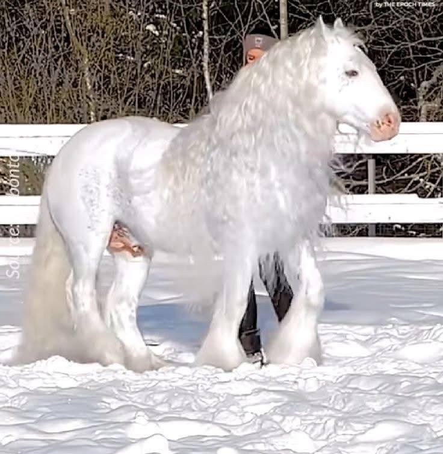
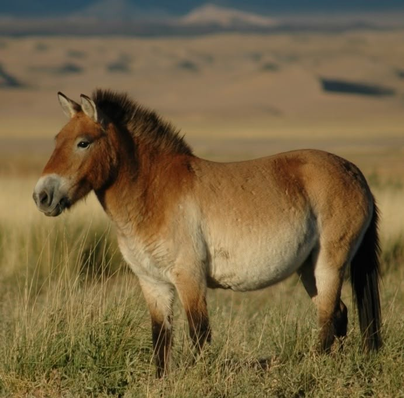

cavalos
Os cavalos são animais mamíferos que estão agrupados na família Equidae, mesma família dos asnos e das zebras, e no gênero Equus, que também inclui os jumentos. São quadrúpedes herbívoros, ou seja, alimentam-se apenas de vegetal, e não são ruminantes. Em média, os equídeos, quando em liberdade, pastam cerca de dois terços do seu dia. Isso acontece porque eles possuem um estômago pequeno, portanto, alimentam-se aos poucos.
características
Em média, os cavalos possuem altura que varia entre 1,40 m e 1,70 m (até a cernelha). Assim, quando o animal apresenta uma altura menor que 1,46 m,é considerado um pônei. Um animal de 1,50 m apresenta um peso médio de 400 kg. Vale salientar que o peso desses animais também é variado de acordo com a raça, sendo bem maior em raças musculosas, como é o caso da Quarto de Milha. O pelo dos cavalos apresenta várias tonalidades, sendo possível observar as colorações castanha, avermelhada, negra e branca. Há ainda raças que apresentam manchas pelo corpo.
Curiosidades
Os cavalos são animais que passam longos períodos de tempo alimentando-se. Eles podem ficar entre 12 e 18 horas pastando. A expectativa de vida do cavalo é de, aproximadamente, 25 anos. Cavalos que ficam confinados por muito tempo podem desenvolver distúrbios emocionais. Isso significa que comportamentos anormais nos cavalos podem indicar que o manejo do animal esteja ocorrendo de forma incorreta.
raças raras
O American Cream Draft é a única raça de cavalo de tração dos Estados Unidos e tem uma origem relativamente recente. Sua existência é atribuída a uma égua chamada Old Granny.
Cavalo de Przewalski é um dos cavalos mais raros do mundo. É o único remanescente dos cavalos selvagens originais a ter chegado aos dias atuais. Sua caça e depredação do ambiente em que vivia, as Pradarias da Mongólia e do Cazaquistão, levou à sua extinção, restando somente exemplares em cativeiro.